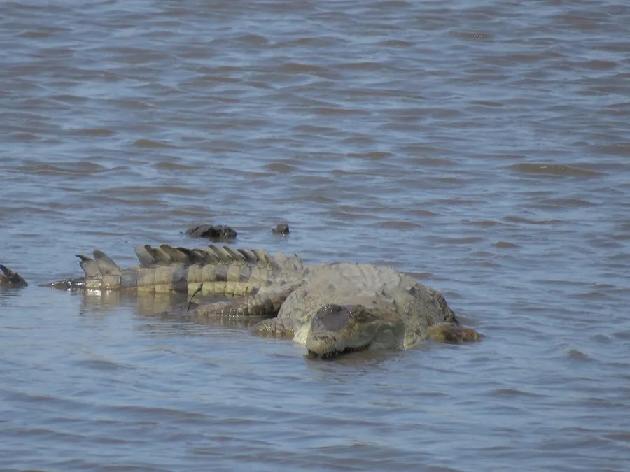

爬行动物 · 动物界
奥里诺科鳄 Crocodylus intermedius

南美洲奥里诺科河流域特有的大型鳄类，吻部细长适于捕鱼，因皮革贸易在二十世纪几近灭绝，现存野生个体仅数百条。
- 分类
- 门脊索动物门纲爬行纲目鳄目科鳄科属鳄属
- 栖息环境
- 奥里诺科河干流、支流、牛轭湖与季节性泛滥平原水塘
- 地理分布
- 委内瑞拉与哥伦比亚的奥里诺科河流域，主要在阿普雷河与梅塔河一带
- 保护级别
- IUCN 极危（CR）；CITES 附录Ⅰ
物种志
奥里诺科鳄是体型较大的鳄类，雄性全长可达 4–5 米，雌性约 3 米，体重 200–400 千克。吻部明显细长，与宽吻的美洲鳄形成对比，适于在水中快速咬合游动的鱼；背部呈灰绿至黄褐色，幼体色浅并带黑色横斑，尾部侧扁强壮，背面鳞甲发达。
它们仅分布于委内瑞拉与哥伦比亚的奥里诺科河流域，栖息于大河、支流、牛轭湖与泛滥平原的季节性水塘。旱季水位下降时，它们会集中到残留的水体中并挖掘泥洞避暑，雨季则随水扩散到泛滥林觅食。食性以鱼类为主，也捕食水鸟、龟类、水豚和小型凯门鳄。每年 1–3 月筑巢产卵，每窝 30–70 枚，孵化期约 70–90 天。二十世纪中期因皮革贸易遭大规模猎杀，加之巢卵被采集与栖息地改变，其种群至今未能恢复。
形态与习性
- 全长雄性可达 4–5 m，雌性约 3 m
- 体重约 200–400 kg，特大个体更重
- 食性鱼类为主，兼食水鸟、龟类、水豚与小型鳄类
- 繁殖1–3 月筑巢，每窝 30–70 枚卵，孵化约 70–90 天
- 栖息特点旱季集中于残留水体，挖掘泥洞避暑
- 种群现状野生成体估计仅数百条，为全球最濒危鳄类之一
- 吻部细长而窄，适于在水中快速咬合鱼类
趣味知识
- 奥里诺科鳄的吻部又细又长，专门用来在水中夹住滑溜的鱼。
- 二十世纪中期它的皮被大量收购，数十年间种群几乎被清空。
- 旱季时它会用爪在泥岸挖出浅洞，躲在里面熬过高温。